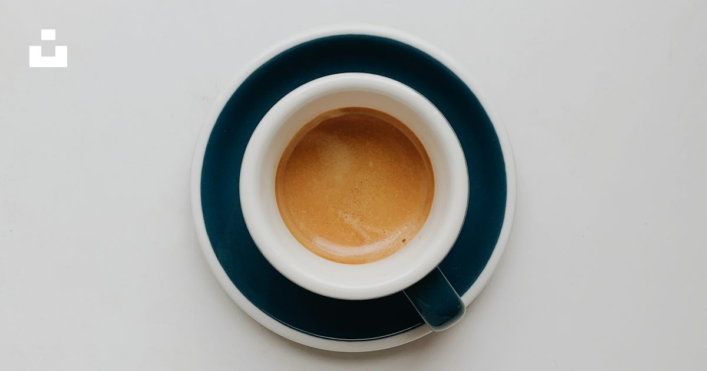
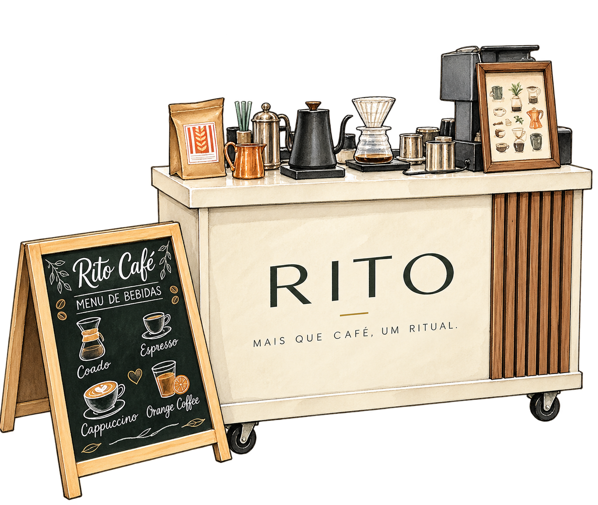
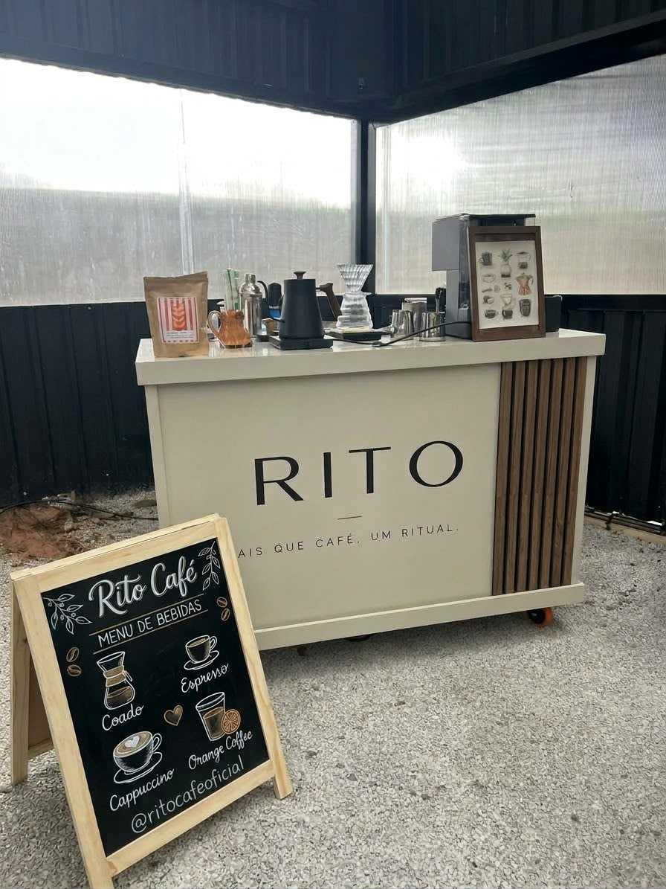
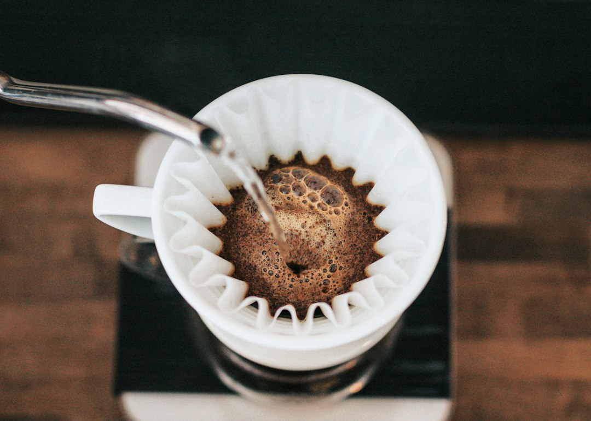
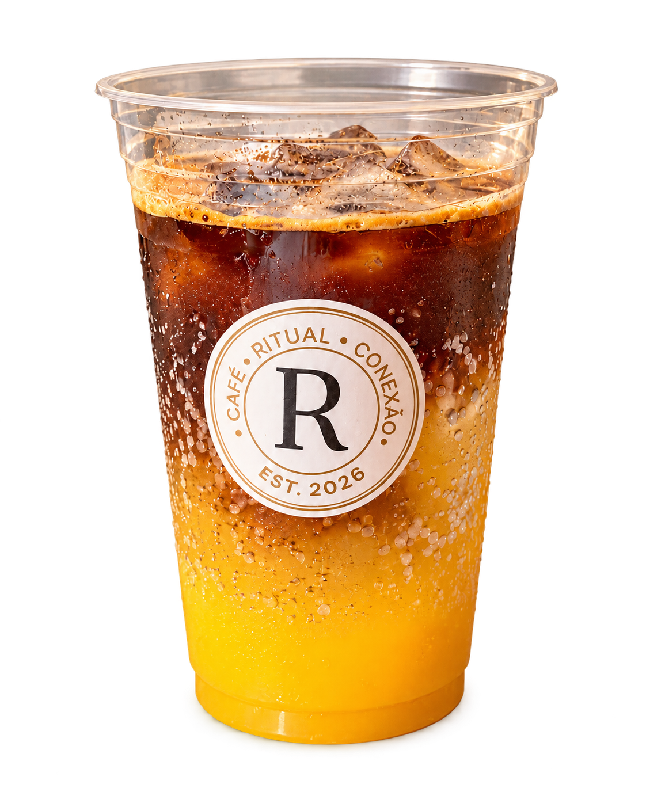
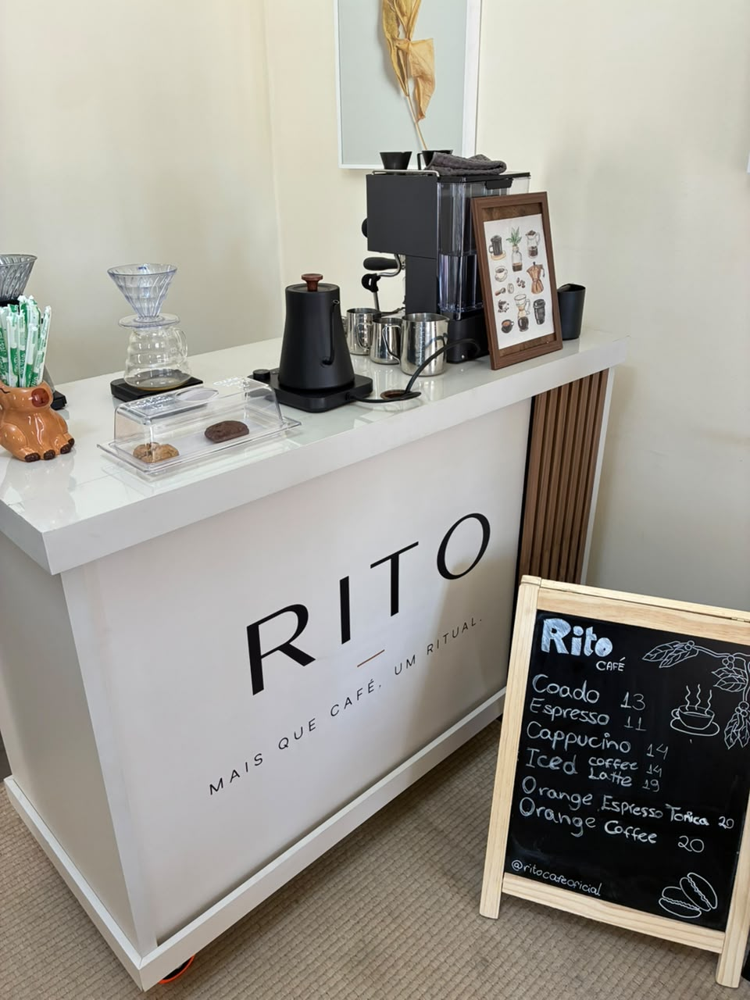
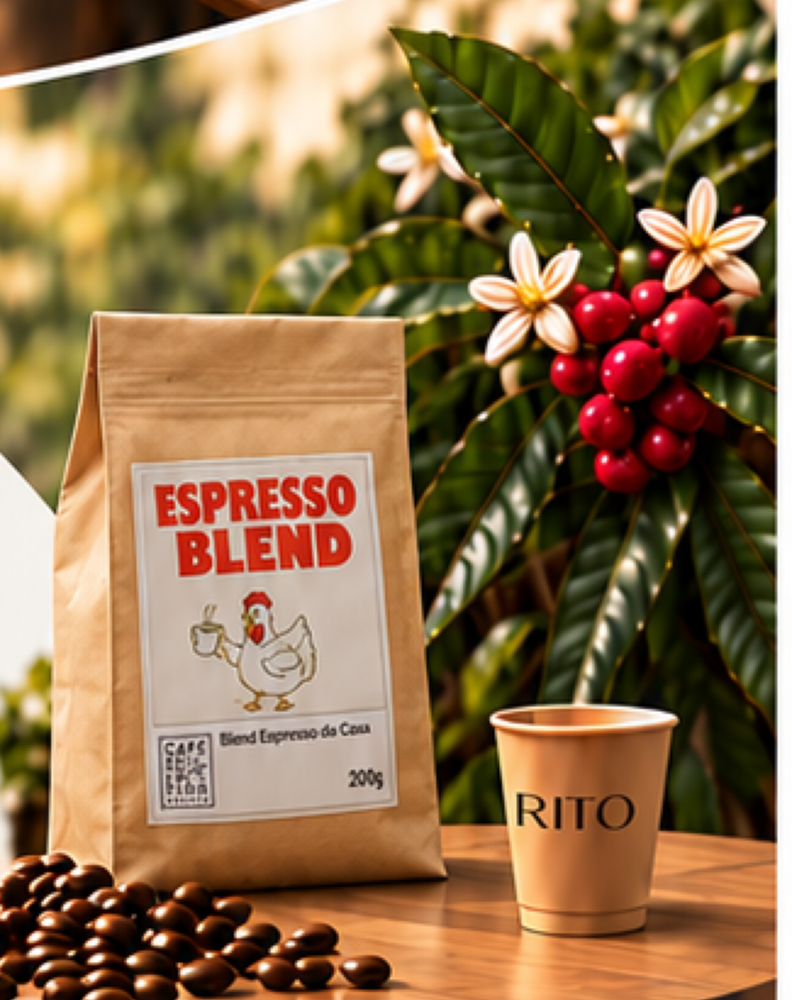

01 / O PRIMEIRO GOLEPequeno.
Pequeno.
Marcante.
O café em sua expressão mais concentrada.

FOTOGRAFIA DE REFERÊNCIA / IRENE KREDENETS, UNSPLASH
Estrutura móvel, café especial e preparo na hora. No seu evento, do seu jeito.
Entre na experiência ↓Levamos a estrutura, pensamos o menu para a ocasião e preparamos tudo na hora. Você aproveita o encontro.

ESTRUTURA RITO / REGISTRO REALNosso carrinho reúne o preparo e o atendimento em uma estrutura móvel que se adapta a diferentes encontros.
O carrinho Rito vai até o seu evento.
Bebidas e acompanhamentos pensados para a ocasião.
Cuidado em cada bebida, do começo ao fim.
O café em sua expressão mais concentrada.

FOTOGRAFIA DE REFERÊNCIA / IRENE KREDENETS, UNSPLASHAroma, cuidado e uma boa conversa.

FOTOGRAFIA DE REFERÊNCIA / UNSPLASHA intensidade do café encontra o frescor da laranja.

ORANGE COFFEE / RITO CAFÉDa conversa entre amigos à energia de um treino. O café encontra seu lugar em diferentes momentos.


Casamentos · Aniversários · Eventos corporativos · Feiras e ativações · Esporte e bem-estar · Clínicas e encontros
A Rito nasceu do encontro de três sócios, unidos pela vontade de fazer diferente: com qualidade, cuidado e propósito.
Trabalhamos com os grãos da Café Selection Brasil, parceira que compartilha nosso compromisso com qualidade e consistência.

Conte a data, o local e o número de convidados.
Vamos pensar a experiência com você.